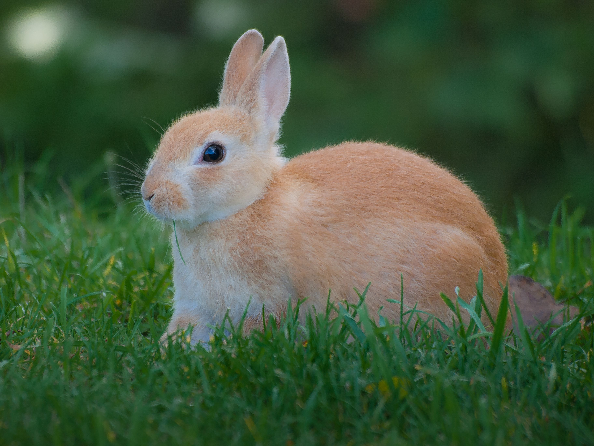
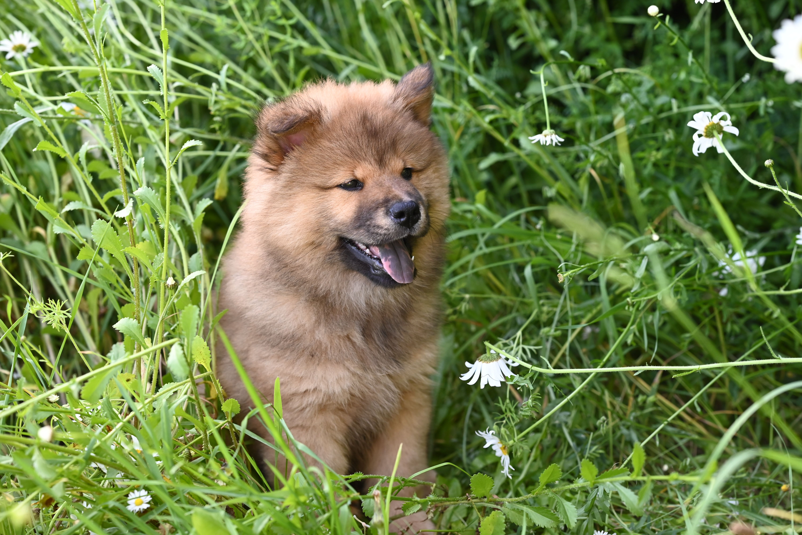
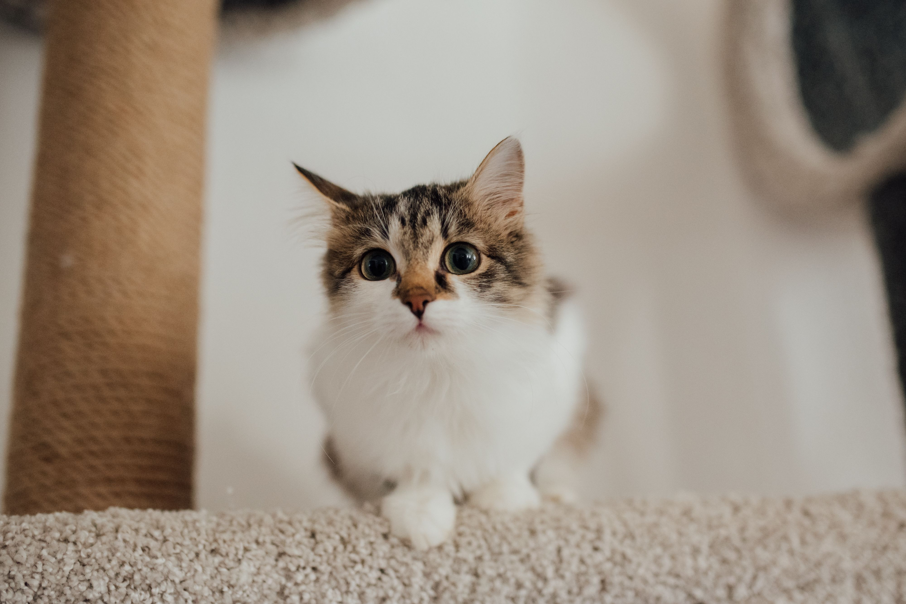
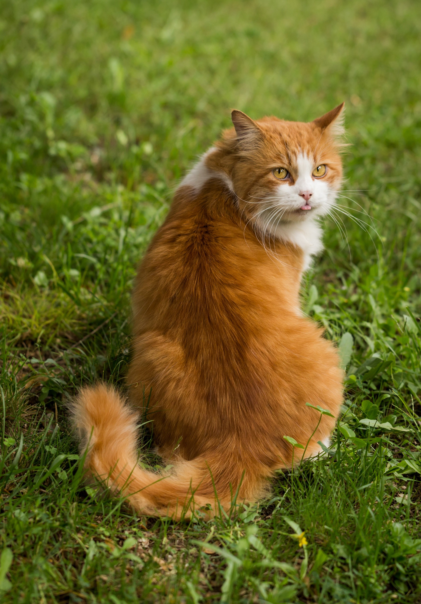
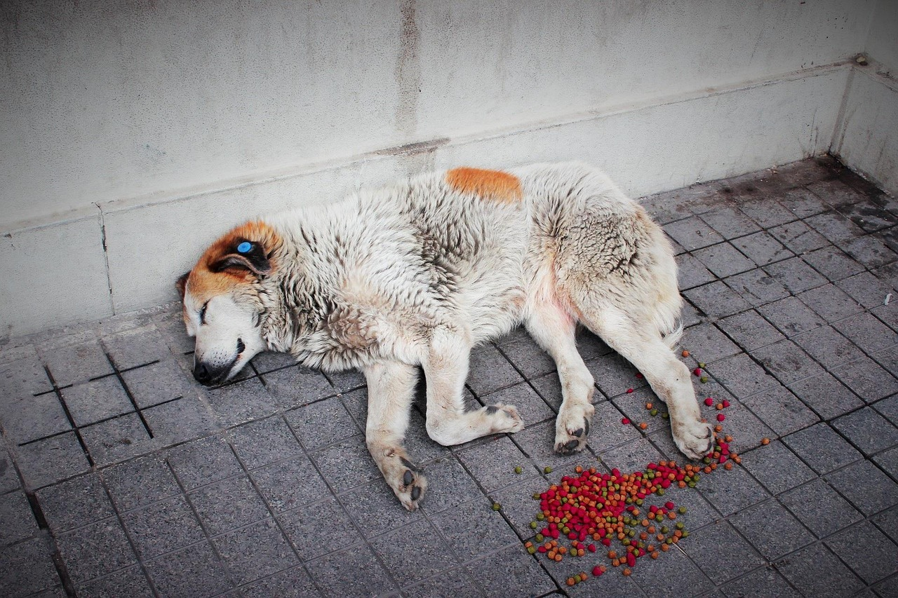
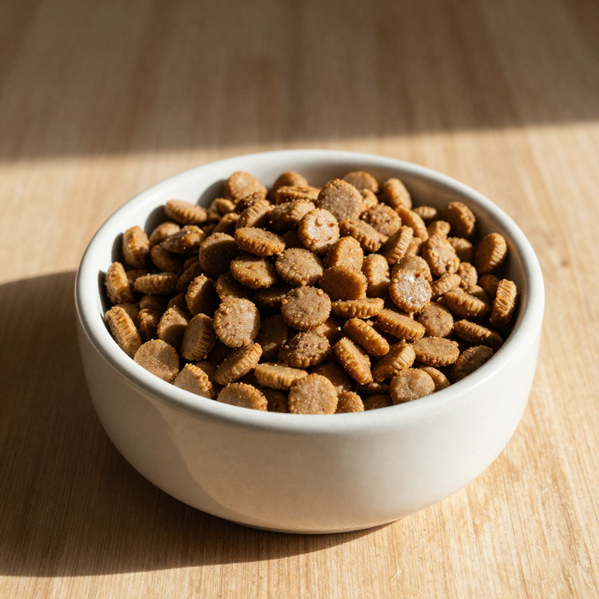
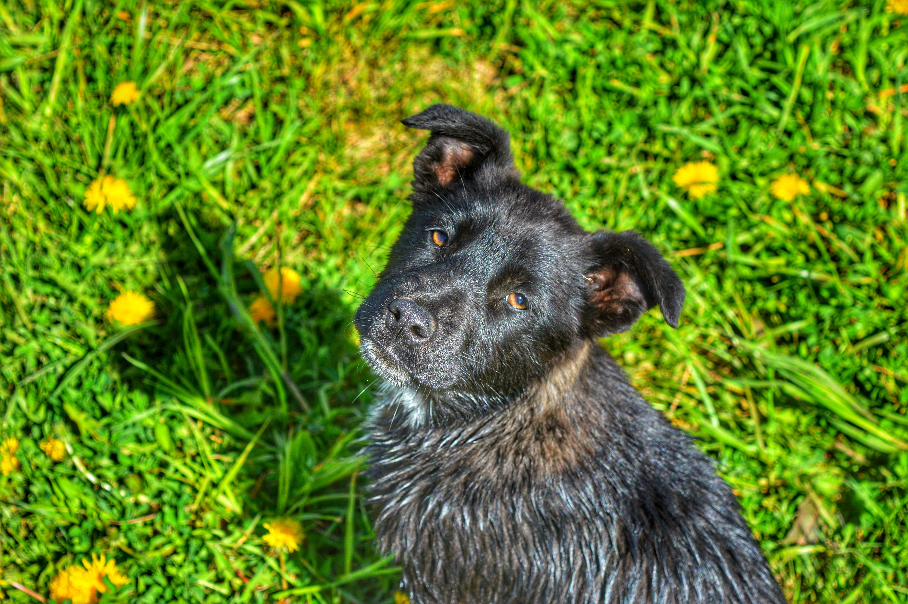
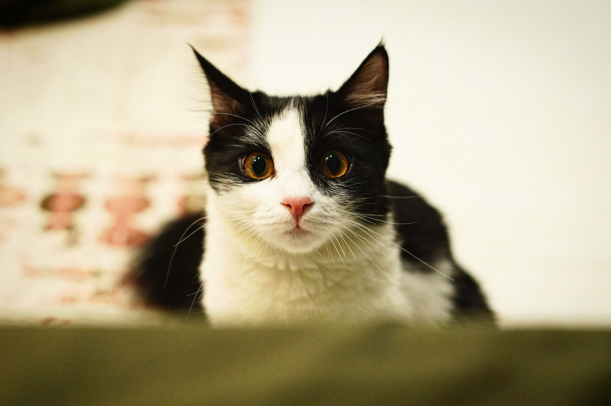

Meu Perfil
Gerencie suas informações e acompanhe suas atividades.
Juliana Silva
juliana.silva@email.com
📞 (11) 99999-9999
📍 São Paulo (SP)
12
Animais Resgatados
08
Em processo de adoção
05
Pedidos de ajuda ativos
Meus Pets
Ver todos
Slinky
coelho - 7 meses

Mel
cachorro - 2 anos

Brownie
gato - 4 anos
Meus pedidos de ajuda
Ver todos
Procure minha Mel
Ativo

Ajuda para resgate
São Paulo, SP
Em andamento

Precisamos de ração
São Paulo, SP
Concluído
Minhas Adoções

Bidu
Concluído

Lola
Concluído
Conecte-se com atitudes
Encontre um pet
Veja os pets que estão prontos
Adoção temporária
Dê um lar temporário
Pedidos de ajuda
Ajude quem precisa
Dúvidas mais lidas
Tire dúvidas e leia novidades